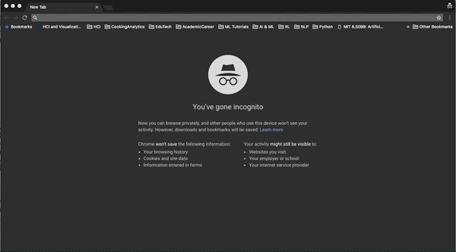

Instruction 1/9 - Reading all the Instructions
In this experiment, we want to see how using voice to navigate HOW-TO VIDEOS can help people learn to do makeups.
Some of them are long, but it's very important that you read them carefully to understand exactly what we want you to do.
So please read all of them very carefully.
There are total NINE instructions, please read them all before diving into the tasks
Instruction 2/9 - Your Makeup kit!
YOU HAVE TO WATCH, DO AND LEARN SIMULTANEOUSLY.
So please have your makeup products and tools ready at your hands, so you can follow the video while doing the tasks.
Do you have your makeup kit with you now? Tell us what you have in front of you verbally. :)
Instruction 3/9 - Certificate Error
When you visit our interface (Don't do it now) for the first time, it might give you a warning about certificate (privacy) error.
It's an issue on our end, and we promise it's safe.
Please click “Advanced”, and click "Proceed to minsukchang.com (unsafe)".
Scroll Down for Demonstration

Instruction 4/9 - Allowing Microphone Access
When you visit our interface (Don't do it now), the website will prompt about granting microphone access.
Please click “ALLOW”. You will need this in order for the interface to listen to you.
Scroll Down for Demonstration

Instruction 5/9 - Getting My Video in the Interface
once you have found a HOW-TO VIDEO on youtube that you want to follow, copy the URL of your YouTube video from the address bar at the top
paste in the URL of the video you found in the interface and click (or say) “change video”
If the video changes and starts playing, say “stop”
If these steps worked, your microphone is working with the interface. If it does not work, please refresh the page, and follow the steps 3 and 4 again.
Scroll Down for Demonstration

Instruction 6/9 - Interface Functions
THIS IS THE MOST IMPORTANT INSTRUCTION!!
PLEASE REMEMBER TO DO THIS THROUGHOUT THE USER TESTING
On the interface, you can control the video using voice. We are deliberately not telling you the exact commands, because we want to see how YOU navigate the video and how YOU say them
At any point if you think the interface is not listening to you, you can click on the “start listening again” button.
If the interface does not support what you want to do, say it how you want to be able to say. And carry out the task using mouse, keyboard, or voice. THIS IS HYPOTHETICAL, SO DON'T WORRY ABOUT SAYING IT IN A WAY A SYSTEM WOULD UNDERSTAND. Just say HOW YOU want to say it.
Example.
- my need: "I want to see the beginning of the step, because I want to check if I have it right"
- I want to be able to say: "let me see that again"
- To proceed, you would: use mouse to scrub the timeline and find the beginning of step, and watch it again
Instruction 7/9 - Wearing a Headset
Please wear a headset to watch the video and follow the tasks
Instruction 8/9 - Picking a Different Video
Feel free to pick another video, if first video is not good for you at any point in the study.
Just find another video from YouTube and paste the URL.
Instruction 9/9 - THINKING ALOUD
PLEASE THINK ALOUD THROUGHOUT.
Describe what you’re trying to do and why
You may pause, go back, skip, watch again, take as much time as you want to finish.
Remember you have to watch, learn, do with a HOW-TO VIDEO, and make sure you have your make up tools ready with you!
You can visit this instruction again by clicking "view instruction page again" button.